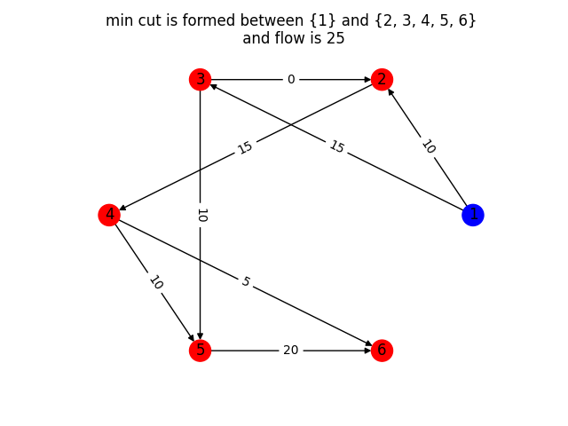
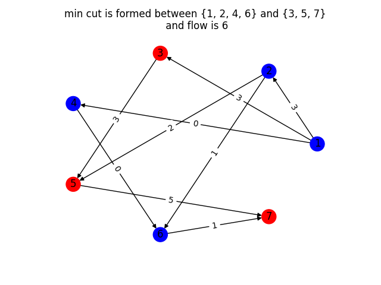
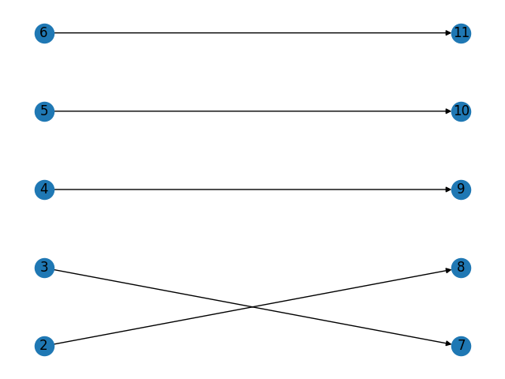
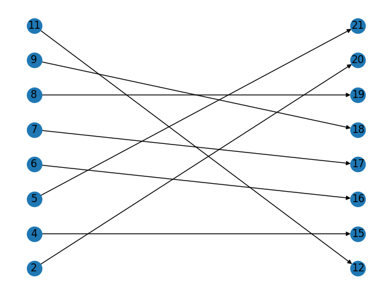
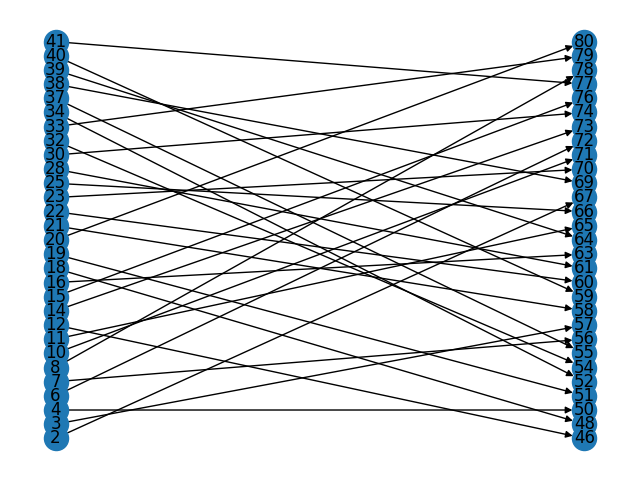
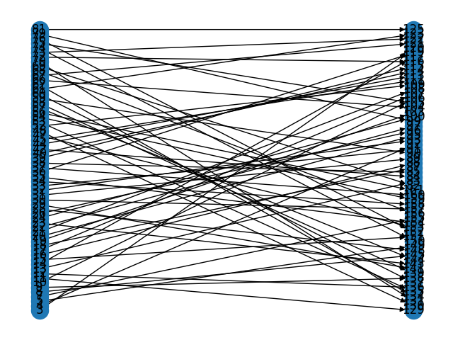
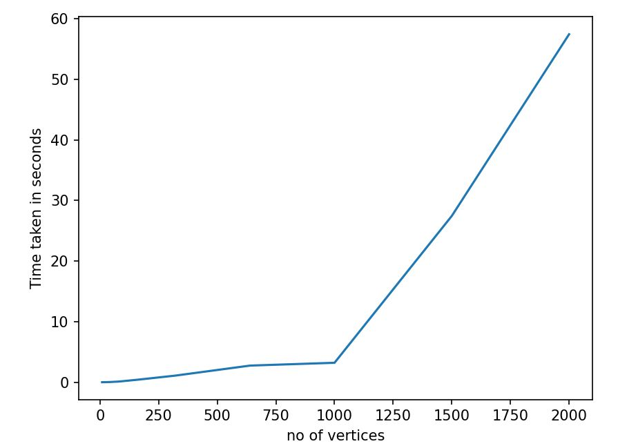

Ford-Fulkerson algorithm
The Ford-Fulkerson algorithm is an algorithm for solving the maximum flow problem in a flow network. The algorithm starts with an initial feasible flow and iteratively increases the flow until it reaches a maximum flow. The algorithm works by finding an augmenting path in the residual graph, which is a graph that represents the flow network after subtracting the current flow from the capacity of each edge.
An augmenting path is a path from the source to the sink in the residual graph that has positive capacity on all its edges. The algorithm increases the flow along this path by the minimum capacity of its edges, which is called the bottleneck capacity. The algorithm then updates the residual graph by subtracting the bottleneck capacity from the forward edges and adding the same amount to the backward edges.
The Ford-Fulkerson algorithm terminates when there is no augmenting path in the residual graph, which means that the maximum flow has been reached. The algorithm can be implemented using different methods for finding augmenting paths, such as the Breadth-First Search (BFS) or Depth-First Search (DFS) algorithms.
One issue with the Ford-Fulkerson algorithm is that it may not converge if the capacities are real numbers instead of integers. This problem can be addressed by using a scaling technique that multiplies the capacities by a power of 2 and rounds them to integers. Another issue is that the algorithm may have an exponential time complexity in the worst case, which can be addressed by using the Edmonds-Karp algorithm that uses BFS to find augmenting paths and has a time complexity of O(VE^2), where V is the number of vertices and E is the number of edges in the flow network.
Applications (Task-2 and Task-3)
The Ford-Fulkerson algorithm can be used to solve various problems in graph theory, including the minimum cut and maximum flow problems, as well as the bipartite matching problem.
In the context of the minimum cut problem, the Ford-Fulkerson algorithm can be used to find the minimum cut in a flow network, which is a cut that minimizes the total capacity of the edges crossing the cut. The algorithm works by computing the maximum flow in the flow network, and then finding the edges that are saturated in the residual graph. These edges form the minimum cut, and the capacity of the cut is equal to the value of the maximum flow.
In the context of bipartite matching, the Ford-Fulkerson algorithm can be used to find the maximum matching in a bipartite graph, which is a set of edges that do not share any vertices and have maximum cardinality. The algorithm works by constructing a flow network from the bipartite graph, where each edge is represented by two directed edges with unit capacity. The source is connected to the left vertices with unit capacity, and the right vertices are connected to the sink with unit capacity. The maximum flow in this flow network corresponds to the maximum matching in the bipartite graph.
There are also variations of the Ford-Fulkerson algorithm that are optimized for these specific problems, such as the Dinic's algorithm for maximum flow and the Hopcroft-Karp algorithm for bipartite matching, which have better time complexity than the basic Ford-Fulkerson algorithm. However, the basic Ford-Fulkerson algorithm provides a fundamental framework for solving these problems using flow networks and augmenting paths.
Analysis of Task1 and Task-2
Input format:
First Line:no_of_edges(n)
next n lines each having from,to,capacity
Output format: Plotting a graph with flow and min-st cut marked
Min st cut indicated by red and blue vertices
1) 8 edges, 6 vertices. Time taken by the code: 401 microseconds

2) 9 edges, 7 vertices.Time taken by the code: 439 microseconds

Analysis of Task-3
Input format: each line containg from and to points
output format: no of edges(n) and n lines with from,to, wt(i.e, 1 in this case)
1)9 edges 10 vertices. Time taken by the code: 1266 microseconds

2)20 edges 10 vertices. Time taken by the code: 2058 microseconds

4)80 edges 40 vertices.Time taken by the code: 27805 microseconds

5)160 edges 80 vertices.Time taken by the code: 108253 microseconds

6)320 edges 160 vertices.Time taken by the code: 412295 microseconds
7)640 edges and 320 vertices. Time taken by the code: 1585831 microseconds
8)1280 edges and 640 vertices. Time taken by the code: 6746370 microseconds
2) 2000 edges 1000 vertices. Time taken by the code: 7210932 microseconds
Images are too cluttered to show
Timing Analysis
